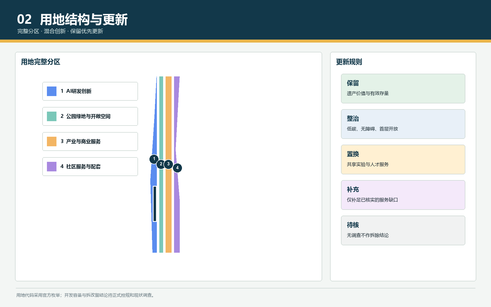
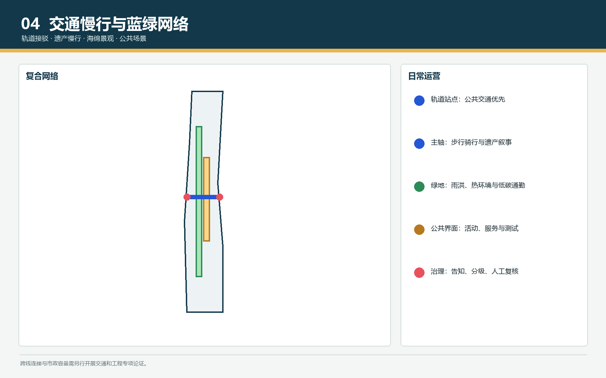
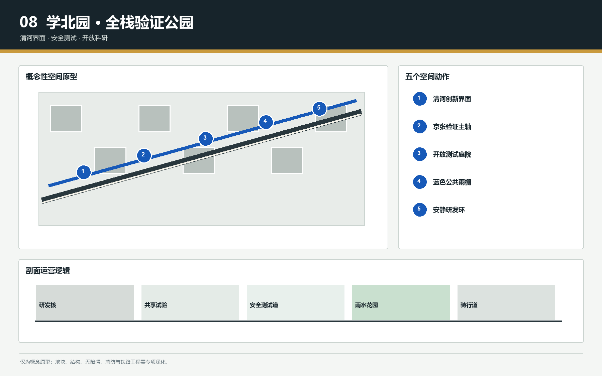
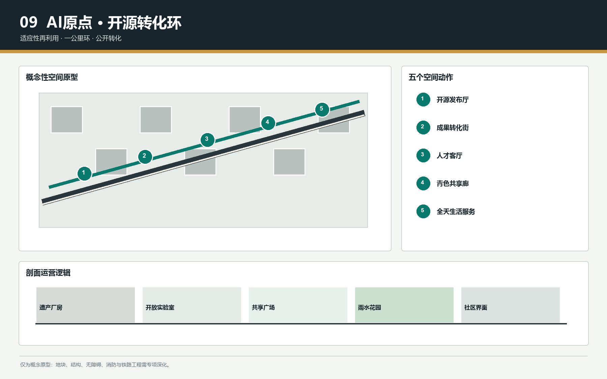
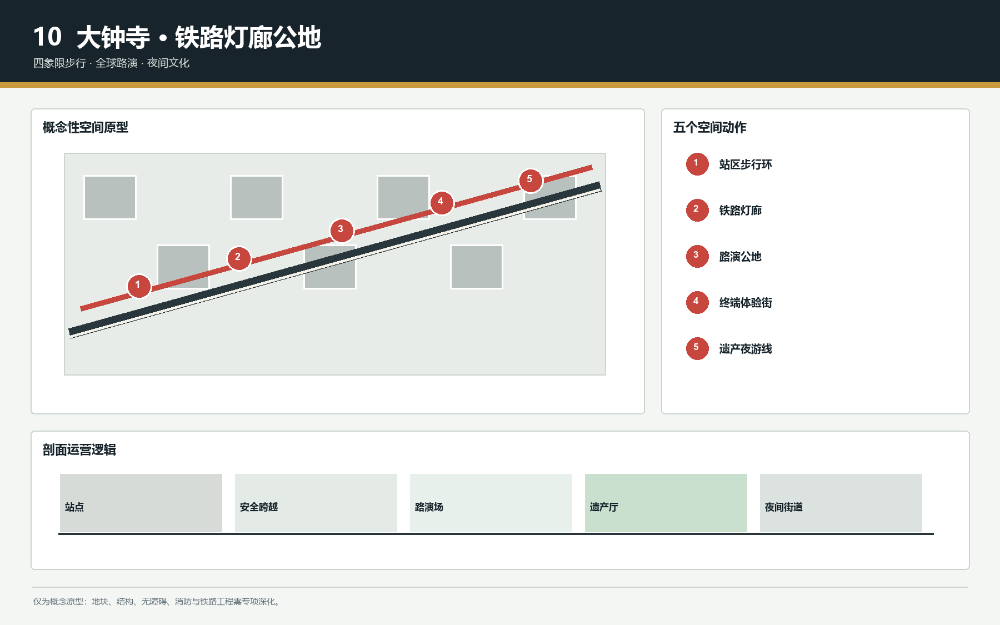

京张新辙・AI 开源创享城
以百年京张铁路遗产为公共主轴，以三处AI重点片区为创新锚点，以开源场景和长期运营把园区、社区与城市生活组织成可验证、可迭代的AI创新城区。
京张新辙・AI 开源创享城
定位句：让百年铁轨成为下一代创新基础设施。 本方案不是给京张沿线再贴一层“AI园区”标签，而是把铁路遗产、大学科研、企业研发、社区生活与公共空间重新组织为一条可步行、可测试、可展示、可持续运营的开放创新带。所有空间判断均为概念建议和专业深化素材，不替代法定规划、工程论证或政府审定。
设计依据与资料清单
方案以官方征集公告、Agent任务书、仓库场地包、公开来源登记表及本地专业案例库为依据。官方仓库当前只提供临时约束边界与三处重点区域，因此几何仅用于方案生成、拓扑审查和表达，不作为正式红线、精确面积或审批依据 来源 来源 深度。
本地案例库的Apple Park、阿里西溪、腾讯企鹅岛、华为松山湖等总部与创新园区，用来比较研发组织、共享设施、慢行系统和景观基础设施；杭州云城、深汕、新桥东、南口国重基地等征集成果，用来提炼总图层级、重点片区放大、指标证据链和图面叙事；低碳城、未来社区与双碳材料用于形成低碳更新与运营评估框架。案例图片、原文和版式不进入公开包，避免未经确认的版权再利用。
证据分为三层：GeoJSON保存空间对象，metrics.json保存可复算指标，三类矩阵保存任务、标准与设计深度覆盖。新闻与公开报道只作为背景，正式边界和控制条件仍待组织方资料补齐 来源 标准。

三层范围工作框架
三层范围采用“区域协同研究—总体设计—重点区域详细设计”的递进框架。区域层判断AI产业链、人才链、创新服务链与城市生活链；总体层把判断落到遗产主轴、用地、交通、蓝绿空间、建筑更新与公共服务；重点层分别检验学北园、AI原点社区和大钟寺的功能、空间、运营和实施依赖 标准 深度。
总体结构为“一轴三区两翼、多点成网”。一轴是京张遗产公园AI慢行与展示主轴；三区分别承载全栈自主创新、近校成果转化和智能产业消费；西翼链接中关村科技服务，东翼链接小月河场景测试。两翼不是新增建设边界，而是跨区协同的服务和场景关系。
范围之间通过共同的空间对象连接：重点区域嵌入总体边界，用地分区完整覆盖临时边界，慢行与公共空间串联各区，分期图层标记先行试点和后续深化。官方边界到位后必须在EPSG:4548下重算面积并同步更新图件、指标和HTML 空间数据 指标。

统筹研究范围产业与未来城市研究
产业策略从“招商清单”转向“创新循环”。北部形成模型、算法、安全治理与标准验证能力；中部形成高校成果转化、开源协作、人才服务和创业孵化；南部形成智能终端、智能体应用、内容消费和国际展示。科技服务翼提供法务、知识产权、投融资和国际合作，场景赋能翼提供具身智能、公共服务和城市运维测试。
AI生态提出七类可深化案例：开源模型协作网络、模型安全验证中心、近校成果转化街区、端侧智能联合实验室、具身智能城市测试岸线、AI公共服务共创站、全球开发者活动网络。每类案例都对应空间载体、开放机制、治理边界和评价指标，不把企业入驻或投资规模写成既定事实 来源 标准。
未来城市形态强调可变首层、共享中庭、连续慢行、低碳景观基础设施和全天候公共服务。研发建筑采用“安静研发核+共享试验廊+公共展示界面”，社区节点采用“15分钟服务+夜间安全+弹性活动”，沿线遗产节点采用轻介入、可逆更新。具体容积率、高度和市政容量待正式控规与工程资料确认 深度。
总体设计范围城市更新与控规深度城市设计
总体设计把临时边界划分为完整、无缝、无重叠的规划用途分区，以研发、混合功能、公共服务、绿地和交通空间形成连续结构。土地用途代码采用官方枚举，名称层面再叠加AI研发、近校创新、遗产公共核心和终端产业等策划含义，避免用自创代码替代国土空间用途分类 标准 空间数据。
更新策略分为保留、整治提升、功能置换、新建补充和待核实五类。具有历史价值、结构条件良好或社区服务意义的对象优先保留；低效封闭界面优先通过首层开放、院落连通和复合使用更新；新增建筑仅作为承载缺口的概念体量。没有现状建筑普查、权属和结构检测时，不给出地块级拆除结论 深度。
强度与风貌采用分层建议：轨道站点和公共服务节点可讨论复合强度，遗产主轴两侧控制连续大体量压迫，重点片区内部以组团庭院、共享中庭和可穿行首层形成细密网络。建筑高度、密度、容积率和退线均列为待正式数据校准事项 深度 深度。
重点区域详细设计
学北园片区定位为“全栈自主创新加速器”。空间上以清河界面和公共绿廊连接研发组团，以开放测试庭院承载模型安全、标准验证和低碳算力展示，以访客中心组织对外交流；园区围墙、滨水通达与交通组织需由专业团队结合权属和工程条件深化 空间数据。
AI原点社区定位为“近校开源成果转化社区”。空间上缝合校园、园区、社区和轨道站点，布置开源发布厅、成果转化街、人才客厅、可负担短住和全天候生活服务；更新优先利用既有建筑与首层界面，形成一公里步行创新圈 空间数据。
大钟寺片区定位为“智能原生消费与全球路演门户”。围绕站点四象限组织步行连通、路演客厅、端侧智能体验、数据合规会客厅和夜间文化活动，强化公共空间而非单一商业盒子。跨路、站城一体化和地下空间均需另行工程论证 空间数据 深度。

AI 创新生态、人才画像与 AI+ 场景
五类核心用户为高校师生、开源开发者与初创团队、研发工程师与企业服务人员、周边居民、国际访客。另设置园区运维者与公共治理人员作为后台用户。每类用户都对应到达方式、日夜节奏、空间需求、数据边界和转化路径，避免把“人才”抽象为招商数字 来源 深度。
十二张场景卡包括：开源发布厅、模型安全沙盒、端侧算力驿站、AI慢行导航、清河低碳创新廊、近校成果转化街、大钟寺全球路演客厅、数据要素合规会客厅、AI生活服务样板街、具身智能测试岸线、铁路遗产数字讲述、全球AI活动周路线。前三类产业验证场景分别是模型安全与标准验证、端侧智能联合测试、具身智能公共空间测试；均要求预约、分级开放、数据最小化和人工复核。
场景不是装饰性设备清单，而是“需求—空间—数据—运营—评价”的闭环。公共空间算法不得做人脸识别式无差别监控；居民画像不用于商业推荐；测试区采用显著告知、可退出路径和安全员机制；模型输出不替代规划审批、公共管理和专业判断 标准。
用地、建筑规模与拆改留方案
用地分区以完整覆盖临时边界为底线，研发与混合功能沿创新节点组织，公共服务嵌入慢行网络，绿地和公共空间形成连续骨架。当前指标只反映概念设计图层，不等同于现状普查或法定容量；土地利用面积、建筑基底和分期面积均应由同一套GeoJSON重算 深度 指标。
建筑更新采用“先评估、再分类、后干预”。保留类关注历史与使用价值；整治类提升能耗、无障碍和首层开放；置换类引入共享实验、人才服务与社区功能；新建类补足公共服务和创新设施；待核实类保留弹性。每一类都要在后续现状调查中补充建筑年代、结构、产权、能耗和使用强度。
形态控制强调沿轨道遗产界面的退让与通透、重点节点的公共首层、组团尺度的步行可达和屋顶低碳利用。任何高度、容积率、拆除比例或投资时序均不在本阶段作审定结论，并在assumptions.json中设置正式数据触发条件 标准。
交通、轨道、市政与公共服务设施
交通策略以轨道站点、铁路遗产慢行主轴和东西向缝合街道构成分层网络。长距离到达优先公共交通，片区内部优先步行与骑行，重点站点设置共享出行、非机动车停放和无障碍换乘。跨快速路和跨铁路连接仅提出概念位置与目标，不给出桥隧工程可行性结论 空间数据 深度。
市政与新基建采用分布式、可扩展的原则：端侧算力节点与公共服务设施共址，能源与碳监测服务建筑更新，雨洪设施与绿地系统一体化，场景测试网络采用最小数据采集和分级权限。具体电力负荷、管网容量、消防与防洪标准待专项资料补齐 深度。
公共服务围绕人才和社区双重需求布置，包括共享会议、法律与知识产权服务、托育与健康、青年短住、文化活动、运动休闲和全天候安全空间。设施不以封闭园区专属为默认，而通过时段共享和预约机制提高利用效率。

蓝绿空间、公共空间与城市风貌
蓝绿系统以清河、小月河和京张遗产公园为生态与公共生活骨架，形成南北连续、东西缝合的慢行绿网。绿地不仅承担景观功能，还承载雨洪调蓄、热环境改善、低碳通勤、户外协作和可控测试。绿地率与公共空间率来自提交几何的阶段性复算，正式边界替换后必须重新计算 指标 指标。
公共空间分为遗产叙事段、创新交流段、社区日常段和产业展示段。三类AI朝圣与荣誉节点为“京张零公里开源碑”“AI原点贡献环”“大钟寺未来终端塔”；它们采用可更新内容、透明评选和无商业排名绑架的展示机制，并避免娱乐化、网红化地消费铁路遗产。
城市风貌将铁路工业尺度、校园理性秩序和AI时代的开放协作结合起来。材料优先耐久、可维护、低碳和可逆；夜景强调安全和识别，不追求大面积媒体立面；导视系统以轨道里程、开源分支和贡献节点形成统一语法 标准 深度。
更新项目清单、实施政策与分期计划
项目库设置六个先导包：遗产慢行断点缝合、学北园清河创新界面、原点社区成果转化街、大钟寺站四象限步行连通、AI公共服务与端侧算力节点、全球AI活动周公共路线。每个项目均记录空间范围、依赖条件、可逆启动方式和评估指标 深度 空间数据。
近期以低成本、可逆和可评估项目启动：导视、开放活动、首层共享、慢行优化和场景沙盒；中期推进建筑更新、站点界面和蓝绿基础设施；长期在正式控规、市政、权属和资金条件明确后深化复合开发与跨区连接。分期年份是方案建议，不构成政府实施承诺 深度。
政策工具包括场景开放清单、公共空间时段共享、更新收益回投、数据治理协议、开发者社区共治和年度第三方评估。运营事件形成“周末开源市集—季度场景测试日—年度全球AI活动周—长期贡献者荣誉体系”的节奏，并设置居民反馈和退出机制。
指标体系、面积复算与合规矩阵
指标分为三组：可由GeoJSON重算的空间指标、需要正式控规确认的控制指标、需要持续运营数据校准的绩效指标。当前可复算项包括边界面积、建筑基底、绿地率、公共空间率和三处重点区域数量；容积率、高度、市政容量等不得因概念模型而被写成法定值 深度 指标。
任务覆盖由compliance_matrix.json逐条映射官方1.3、1.4、1.5任务与agent.1至agent.6；standard_matrix.json覆盖公告、任务书、城市设计、控规深度和用地分类等必需标准；design_depth_matrix.json覆盖15项正式设计深度。正文只保留与判断相邻的证据锚点，完整审计索引留在结构化文件。
图件、PDF和离线HTML必须显示相同指标和临时边界警示。官方边界或重点片区更新后，重算流程为：替换约束图层、重建用地拓扑、裁切设计层、投影至EPSG:4548、重算指标、再生成图件和HTML，最后重跑四道官方校验。

风险、版权与合规说明
首要风险是边界、现状建筑、权属、道路红线、市政、文保与工程条件不完整。所有相关结论均降级为待正式数据补齐的概念建议，临时几何不得用于精确面积评分、审批或投资决策 来源 深度。
第二类风险是AI场景的隐私、安全和误用。方案要求数据最小化、显著告知、人工复核、分级开放、可退出和审计日志；不使用非公开个人数据，不承诺无人化治理，不把模型输出作为执法、规划审批或公共资源分配的唯一依据。
第三类风险是版权和品牌误用。公开参赛包中的图件由本方案生成，本地案例仅作学习，不复制未获授权的图片、页面、字体或商标。项目名称、标识和朝圣节点均为概念提案，最终使用需经过权利核查与组织方审定 标准。
参考资料
主要资料包括官方征集公告、brief/site-package场地包、Agent任务书、官方标准快照、数据来源登记表以及可公开核验的北京相关政府信息。详细发布者、URL、获取日期、用途、许可状态和限制记录于sources.json 来源 来源。
专业案例库仅作为方法与表达参照：总部园区用于研究研发组织和共享空间，城市设计征集用于研究总图和版式层级，低碳与未来社区资料用于研究蓝绿基础设施和运营指标。任何未确认许可的材料均不在公开包中再分发。
本方案的机器审计入口为geometry、metrics、assumptions、sources和三类矩阵；人类阅读入口为中英文报告、五张图、A3文册、A0展板及离线HTML。二者共同构成可读、可复算、可追责的开源城市设计包 标准。
<!-- V2-VISUAL-EVIDENCE:START -->
V2视觉证据与空间原型
四张效果图用于检验方案的公共空间气质、人物活动与材料语言，均为基于策略的概念性可视化，不代表现状精确透视、法定总平面或工程设计。总体鸟瞰把三处节点压缩进一幅叙事画面，仅用于说明“一轴三区”的协同关系；可审查的空间边界、面积与比例仍以GeoJSON和metrics.json为准。


学北园：全栈验证公园
学北园以开放测试庭院、清河创新界面、蓝色公共雨棚和安静研发环构成“可见但不扰民”的验证环境。效果图中的中央轨道明确为退役铁路遗存景观；机器人测试采用预约、分区、显著告知、人工安全员与可退出路径，避免把公共空间变成无边界试验场。


AI原点：开源转化环
AI原点把红砖存量、开源发布厅、成果转化街、人才客厅和全天生活服务组织成一公里步行创新环。发布活动并非每日满负荷状态，平日以社区服务、共享实验和小型协作为主；轨道遗存与雨水花园共同形成可识别的公共底盘。


大钟寺：全球路演公地
大钟寺通过四象限步行环、朱红铁路灯廊、路演公地和遗产夜游线连接轨道通勤与夜间文化。灯廊被定义为可逆轻型连接设施，跨线、消防、无障碍、电梯与地下空间均须另行开展专项工程论证。




<!-- V2-VISUAL-EVIDENCE:END -->